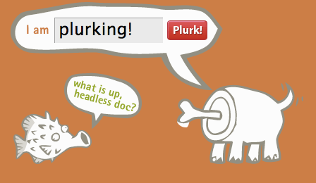

Plurk Brings A Breath Of Fresh Air To Microblogging
Twitter may be the king of the 140 character-limit hill but with it being down more than it is up, it is nice to have options. Pownce was seen as a possible “Twitter killer” offering a more stylish interface and a bevy of additional features like nested replies (keeping conversations neat and tidy) and embedded media options. But it says something when one of the main people behind Pownce, Kevin Rose, flings his Twitter address all over the place. It’s a real shame because Pownce is better organized and even includes a business model. Too bad it’s a virtual ghost town compared to the fluttering Twitter community.
Plurk is a similar service with a unique visual twist. Instead of reading your messages in a linear stream, Plurk displays your correspondents on an attractive timeline. Each Plurk can be directly responded to like a mini-forum eliminating the barrage of @ responses that comes with Twitter. Taking a page from Facebook’s status update feature, Plurk lets you specify an action like “is”, “likes”, “thinks” etc. which are uniquely colored similiar to the popular Twitter mashup Twistori. The site tips the scale when it comes to AJAX effects with lots of fading modal windows but provides a rich experience for consuming the stream of information presented before you.

The two most unique features that Plurk brings to the game are Cliques and Karma.
Cliques in Plurk are just like Cliques in real-life: an exclusive group of people. Plurk lets you separate your friends into different groups so you can better filter messages coming to you. Cliques also let you send out a message to a certain group of people so you can keep your messages to your family hidden from your group of co-workers.
Karma is a community status indicator so you can easily spot the active members from the passive on-lookers. Your score is calculated every day and is influenced by you and your friends Plurk activity as well as friend referrals. It’s a pretty clever idea by the site creators to help build buzz by giving a useless number to try and grow. Think of it like a score in a video game.
Plurk is still missing an open API so other people can build apps on top of the service and mobile support so people can send Plurks in while they are out and about. But Pownce was in the same boat when it first launched and adding those features hardly helped it’s market share. The real test will be if Plurk can attract the hordes of Twitter followers because microblogging services like this are only useful if the people you know (or want to know) are part of the game.
Oh and the mascot is a dog without a head.

Follow me on Plurk, Twitter, Pownce, and a bunch of other social services.